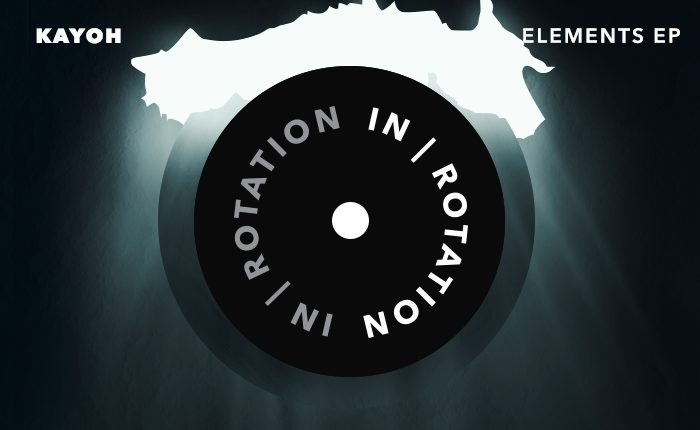

Kayoh Channels His ‘Elements’ With New EP for IN / ROTATION [Free Download]


Baltimore native Kayoh has arisen out of a city with a formidable history in bass music—though he’s also got something fresh to offer. Riding the wave of energy from the emergence of the trap scene over the past few years, Kayoh merges rumbling low-end rhythms and fat beats with a powerhouse energy influenced by the bombast of mainstage EDM.
Plus, he’s got a tight relationship with the Insomniac crew. After winning our Discovery Project competition back in 2015, he’s been rocking crowds regularly at our festivals, and he’s backing this up with the release of his new Elements EP on IN / ROTATION.
Elements sees Kayoh taking his style to the next level after the steady string of remixes, bootlegs, and collabs he’s dropped in recent months. To mark its release, we decided to have a chat with Kayoh about everything he’s got going on—gigs, studio work, and otherwise.
Kayoh’s Elements EP available here.
We’ve entered the second half of the year; how have things been traveling for you?
2017 has been an amazing year so far! It started off with playing at Countdown, and then a few months later, I wrapped up my EP. Since then, I have really been experimenting with a lot of new sounds, genres and styles. It has felt good to get out of my comfort zone and start creating music completely different than what I have been used to!
You’re fairly fresh to the dance music world, though you’ve been on the ascent the past few years. Tell us about your journey so far.
I started producing a few years before I really started to become a fan of electronic music. I was making mostly hip-hop beats and mashups. That was fun, but when I discovered electronic music, I knew it was something I had to try and create myself. I started off trying to (badly) recreate some Swedish-style house music like Avicii and SHM, and it was not very good. Once I started listening to more bass music, and once the trap scene took off, I knew I could find my niche in there, since I was already experienced in making hip-hop beats. It has been a wild ride since then, and I’m incredibly grateful for all the opportunities and experiences I have had since I discovered dance music.
You’ve emerged from the Baltimore bass scene, a city that really has a legendary history in club culture. What was it like coming of age in the city’s scene?
I was a little late on the bass music scene in Baltimore, but around 2010, when I graduated high school, I started going to shows with friends a few times a month. The people at Steez Promo always threw some amazing shows and festivals, and the energy around bass music at that time was so raw and underground. It certainly was a time I will never forget!
Your involvement with Insomniac the past few years has really put you on the upward ascent. Tell us a little about how you first caught their attention, and the sorts of gigs and experiences you’ve been having since then.
It was late November of 2015 when I got the call that I had won the Discovery Project contest for Countdown New Year’s Eve, and I was completely shocked and ecstatic. Since that moment, Insomniac has been incredibly supportive of me, and they have really helped me get off the ground. I have traveled to more states than I could dream of and have met some amazing people through their festivals that I have played. I will be releasing my EP through their IN / ROTATION imprint, and I will also be playing Nocturnal Wonderland next month. I am so thankful for Insomniac, and I am very excited to continue to grow with them in the years to come.
Was there a big challenge involved in moving into the festival space in the way you did?
The biggest challenge for me was mentally preparing myself for Countdown, which was my first festival. I was pretty nervous before I stepped onstage, but by the time I transitioned into the third or fourth song, I started to feed off the crowd and had one of the best nights of my life! Since then, I still get a little nervous, but I just try and have fun with it and enjoy myself.
You’ve got a solid run of remixes under your belt, alongside your original productions. How have you developed and evolved your sound the past few years?
The past few years, I have focused mainly on experimental trap and future bass. After I finished my EP, I noticed I wasn’t having as much fun making that type of music anymore. Recently, I have been influenced by artists like Eric Prydz, Rezz and Oliver, just to name a few. I have really been enjoying making four-on-the-floor, downtempo music, while still keeping a heavy bass element in there. I have a few originals in the style of my “Godzilla” and “Strobe” remixes that are finished, and I am looking forward to releasing them later this year! I will still always make trap music and play it in my sets; I’m just taking a little break from it.
Tell us a bit about your upcoming EP on Insomniac Records.
This EP was a project that I really wanted to challenge myself with. I love making remixes and doing collabs, but I wanted to tackle this project completely on my own. Every track on the EP differs in style and tempo, and each track represents a separate element. I also used a lot of nature noises in the background for some added atmospheric texture, such as wind, waves, and fire crackling. I won’t say which element represents which track—I want to leave that up to the listener!
Download the EP for free here.
Follow Kayoh on Facebook | Twitter | SoundCloud
Follow In / Rotation on Facebook | Twitter | SoundCloud